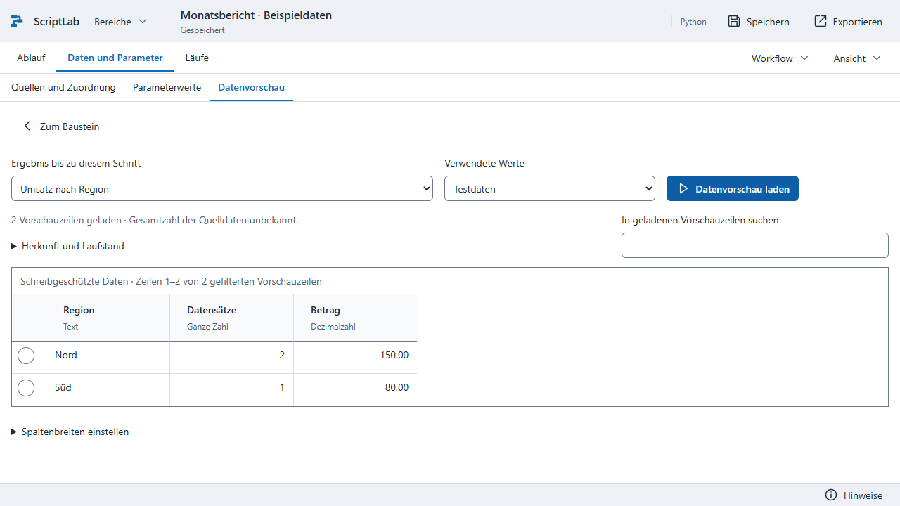
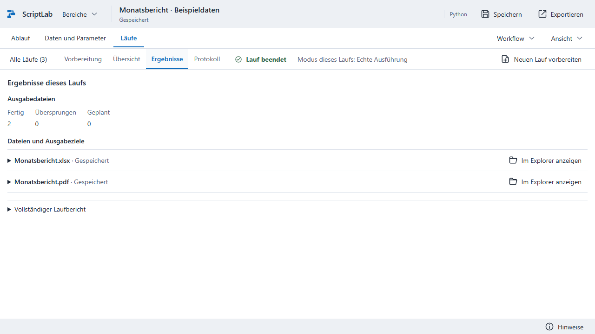

Bisheriger Stand: drei Kopfebenen. Die Aufnahme verwendet einen längeren Beispielworkflow.
Aktueller Stand: zwei Kopfzeilen, ausgewählter Schritt und direkte Datenvorschau. Der kürzere
Beispielworkflow dient der Übersicht; der Bildvergleich ist kein pixelgleicher Funktionstest.
Vorschau und Ergebnisse

Das tatsächlich geladene Zwischenergebnis.

Die tatsächliche Ausführung hat beide Dateien erzeugt.